Next: Additional Details Up: Multiple Objectives Previous: Specifying Multiple Objectives
Of course, specifying a set of objectives is only the first step in solving a multi-objective optimization problem. The next step is to indicate how the objectives should be combined. As noted earlier, we support two approaches: blended and hierarchical.
A blending approach creates a single objective by taking a linear
combination of your objectives. You provide a weight for each
objective as an argument to setObjectiveN. Alternatively, you
can use the ObjNWeight attribute,
together with ObjNumber. The
default weight for an objective is 1.0.
To give an example, if your model has two objectives, 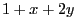 and 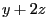, and if you give weights of 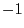 and  to them, respectively,
then Gurobi would solve your model with a blended objective of
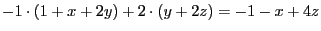.
to them, respectively,
then Gurobi would solve your model with a blended objective of
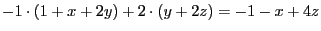.
You should avoid weights that are very large or very small. A very
large weight (i.e., larger than  ) may lead to very large
objective coefficients, which can cause numerical difficulties. A
very small weight (i.e., smaller than
) may lead to very large
objective coefficients, which can cause numerical difficulties. A
very small weight (i.e., smaller than  ) may cause the
contribution from that objective to the overall blended objective to
be smaller than tolerances, which may lead to that objective being
effectively ignored.
) may cause the
contribution from that objective to the overall blended objective to
be smaller than tolerances, which may lead to that objective being
effectively ignored.
Hierarchical Objectives
A hierarchical or lexicographic approach assigns a priority to each
objective, and optimizes for the objectives in decreasing priority
order. At each step, it finds the best solution for the current
objective, but only from among those that would not degrade the
solution quality for higher-priority objectives. You provide the
priority for each objective as an argument to setObjectiveN.
Alternatively, you can use the
ObjNPriority attribute. Priorities
are integral, not continuous. Larger values indicate higher
priorities. The default priority for an objective is 0.
To give an example, if your model has two objectives, with priorities 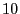 and 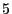, and the optimal solution for the first objective has value 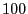, then the solver will find the solution that optimizes the second objective from among all solutions with objective for the first objective.
Allowing Multiple-Objective Degradation
By default, our hierarchical approach won't allow later objectives to
degrade earlier objectives. This behavior can be relaxed for MIPs through a
pair of tolerances: a relative and an absolute tolerance. These are
provided as arguments to setObjectiveN, or they can be set
using attributes ObjNRelTol and
ObjNAbsTol. By setting one of these
for a particular objective, you can indicate that later objectives are
allowed to degrade this objective by the specified relative or
absolute amount, respectively. In our earlier example, if the optimal
value for the first objective is , and if we set
ObjNAbsTol for this objective to 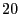, then the second
optimization step would find the best solution for the second
objective from among all solutions with objective  or better for
the first objective. Note that if you modify both tolerances, later
optimizations would use the looser of the two values (i.e., the one
that allows the larger degradation).
or better for
the first objective. Note that if you modify both tolerances, later
optimizations would use the looser of the two values (i.e., the one
that allows the larger degradation).
Objective degradations are handled differently for multi-objective LP
models. For LP models, solution quality for higher-priority objectives is
maintained by fixing some variables to their values in previous
optimal solutions. These fixings are decided using variable reduced
costs. The value of the ObjNAbsTol parameter indicates the
amount by which a fixed variable's reduced cost is allowed to violate
dual feasibility, whereas the ObjNRelTol parameter is simply
ignored.
If you want the MIP behavior, where the degradation is controlled
more directly, you can add a dummy binary variable to the model, thus
transforming it into a MIP. Solving the resulting multi-objective MIP
will be much more time consuming than solving the original multi-objective LP.
Combining Blended and Hierarchical Objectives
You can actually set both a weight and a priority for each objective. This allows you to combine the blended and hierarchical approaches. To understand how this works, we should first provide more detail on how hierarchical objectives are handled.
When you specify a different priority for each of  objectives, the
solver performs
objectives, the
solver performs  separate optimization steps. In each step, in
decreasing priority order, it optimizes for the current objective,
while imposing constraints that ensure that the quality of
higher-priority objectives isn't degraded by more than the specified
tolerances.
separate optimization steps. In each step, in
decreasing priority order, it optimizes for the current objective,
while imposing constraints that ensure that the quality of
higher-priority objectives isn't degraded by more than the specified
tolerances.
If you give the same priority to multiple objectives, then they will
be handled in the same optimization step, resulting in fewer than  total steps for
total steps for  objectives. More precisely, one optimization step
is performed per distinct priority value, in order of decreasing
priority, and all objectives with the same priority are blended
together, using the weights for those objectives. This gives you
quite a bit of flexibility when combining the blended and hierarchical
approaches.
objectives. More precisely, one optimization step
is performed per distinct priority value, in order of decreasing
priority, and all objectives with the same priority are blended
together, using the weights for those objectives. This gives you
quite a bit of flexibility when combining the blended and hierarchical
approaches.
One subtle point when blending multiple objectives within a single
level in a hierarchical approach relates to the handling of
degradations from lower-priority levels. The objective degradation
allowed after a blended optimization step is the maximum absolute and
relative degradations allowed by each of the participating
objectives. For example, if we have three objectives with
ObjNPriority equal to 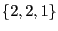, and ObjNRelTol
equal to
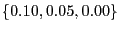 and ObjNAbsTol equal to 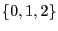, and if the best solution for the first priority objective is
, then the allowed degradation for the first priority objective is
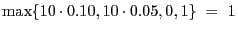.
Querying multi-objective results
Multiple objective values can be queried programmatically in all our APIs.
The basic notion is that you have to specify for which multi objective
you want to query information (by setting the parameter
ObjNumber).
Furthermore, you can also specify for which solution you want to query
this information (by setting the parameter
SolutionNumber).
For example, in Python you can do the following:
# Read and solve a model with multiple objectives
m = read('input.mps')
m.optimize()
# get the set of variables
x = m.getVars()
# Ensure status is optimal
assert m.Status == GRB.Status.OPTIMAL
# Query number of multiple objectives, and number of solutions
nSolutions = m.SolCount
nObjectives = m.NumObj
print('Problem has', nObjectives, 'objectives')
print('Gurobi found', nSolutions, 'solutions')
# For each solution, print value of first three variables, and
# value for each objective function
solutions = []
for s in range(nSolutions):
# Set which solution we will query from now on
m.params.SolutionNumber = s
# Print objective value of this solution in each objective
print('Solution', s, ':', end='')
for o in range(nObjectives):
# Set which objective we will query
m.params.ObjNumber = o
# Query the o-th objective value
print(' ',m.ObjNVal, end='')
# print first three variables in the solution
n = min(len(x),3)
for j in range(n):
print(x[j].VarName, x[j].Xn, end='')
print('')
# query the full vector of the o-th solution
solutions.append(m.getAttr('Xn',x))